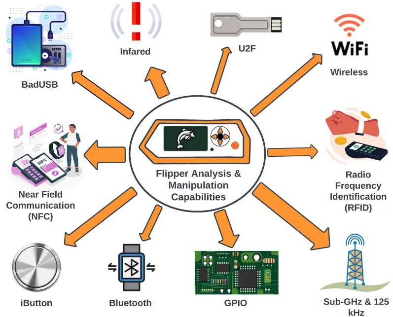

>>> OBJETS PRATIQUES <<<
Flipper Zero
Le Flipper Zero est un outil multifonction portable destiné à l’audit des systèmes électroniques et sans fil. Il permet d’interagir avec des technologies comme RFID, NFC, infrarouge, Bluetooth et Sub-GHz. Très utilisé en pentest matériel et IoT, il sert à tester la sécurité des badges d’accès, télécommandes, objets connectés ou systèmes domotiques. Sa polyvalence en fait un véritable couteau suisse du pentester hardware.
M5StickC
Le M5Stick est un microcontrôleur compact basé sur ESP32, souvent utilisé pour créer des outils personnalisés de pentest et de recherche en sécurité. Il peut servir à développer des scripts de tests Wi-Fi, Bluetooth ou d’affichage d’informations réseau. Grâce à sa programmabilité, il est apprécié pour l’apprentissage, les démonstrations et les tests expérimentaux en cybersécurité embarquée.
Rubber Ducky
Le Rubber Ducky est une clé USB qui se fait passer pour un clavier lorsqu’elle est branchée à un ordinateur. Elle peut exécuter automatiquement des scripts de frappes ultra rapides pour tester la sécurité face aux attaques physiques et à l’ingénierie sociale. Cet outil permet par exemple de vérifier si un poste verrouillé ou mal protégé peut être compromis en quelques secondes. Il est utilisé pour sensibiliser aux risques liés aux ports USB et à l’accès physique.
ESP32
La carte ESP32 est très populaire en sécurité informatique et IoT. Elle permet de tester la sécurité des communications Wi-Fi et Bluetooth, de simuler des périphériques ou d’analyser des comportements réseau. Moins “clé en main” que le Flipper Zero, elle offre cependant une grande liberté de développement et est largement utilisée par les pentesters pour créer des outils sur mesure.
Fonctionnement du Flipper Zero
Outils de Pentester
| Outil | Type | Usage principal | Facilité d’utilisation |
|---|---|---|---|
| Rubber Ducky | USB programmable | Automatiser des actions sur un PC | Moyenne |
| Flipper Zero | Multi-fonction | Tester RFID, NFC, Bluetooth | Facile |
| M5StickC | Microcontrôleur | Créer des outils personnalisés | Moyenne |
| ESP32 | Microcontrôleur | Tester Wi-Fi/Bluetooth IoT | Avancé |